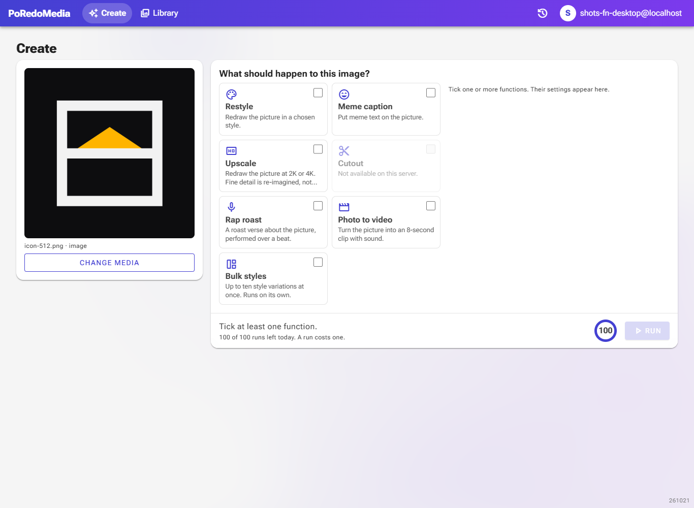
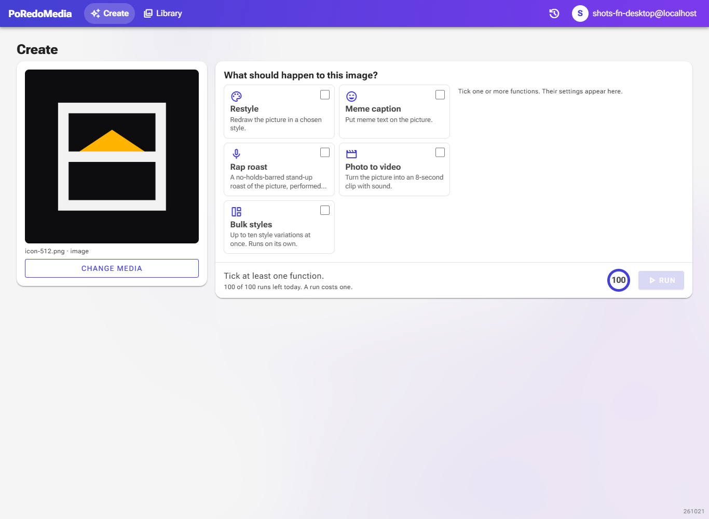
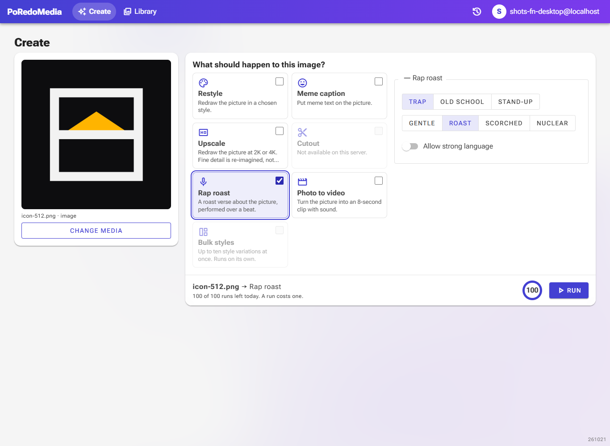
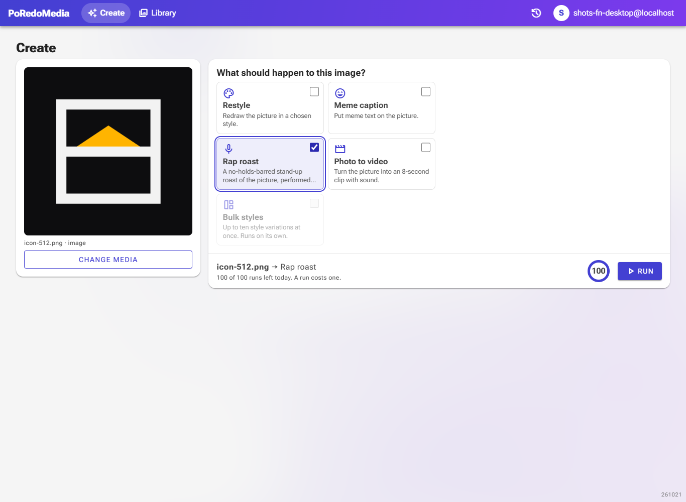
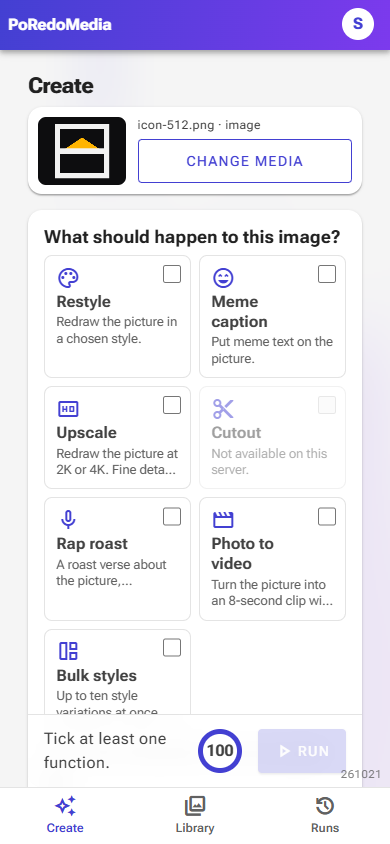
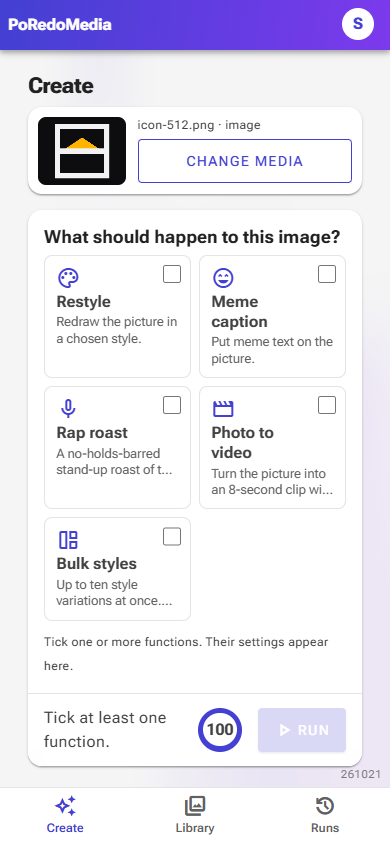
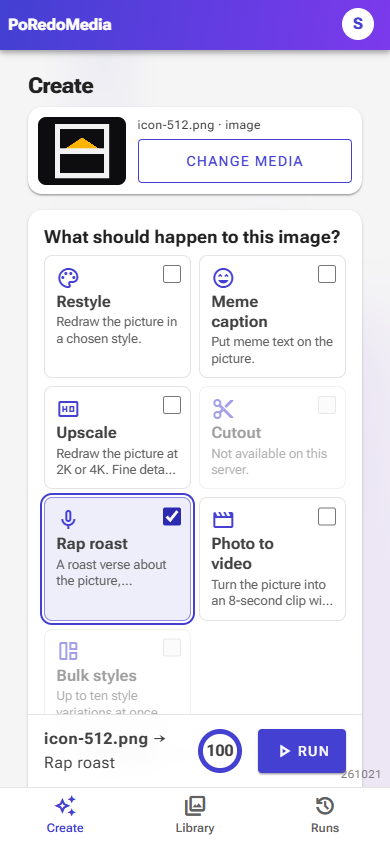
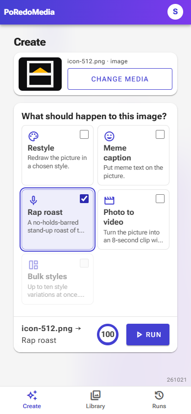
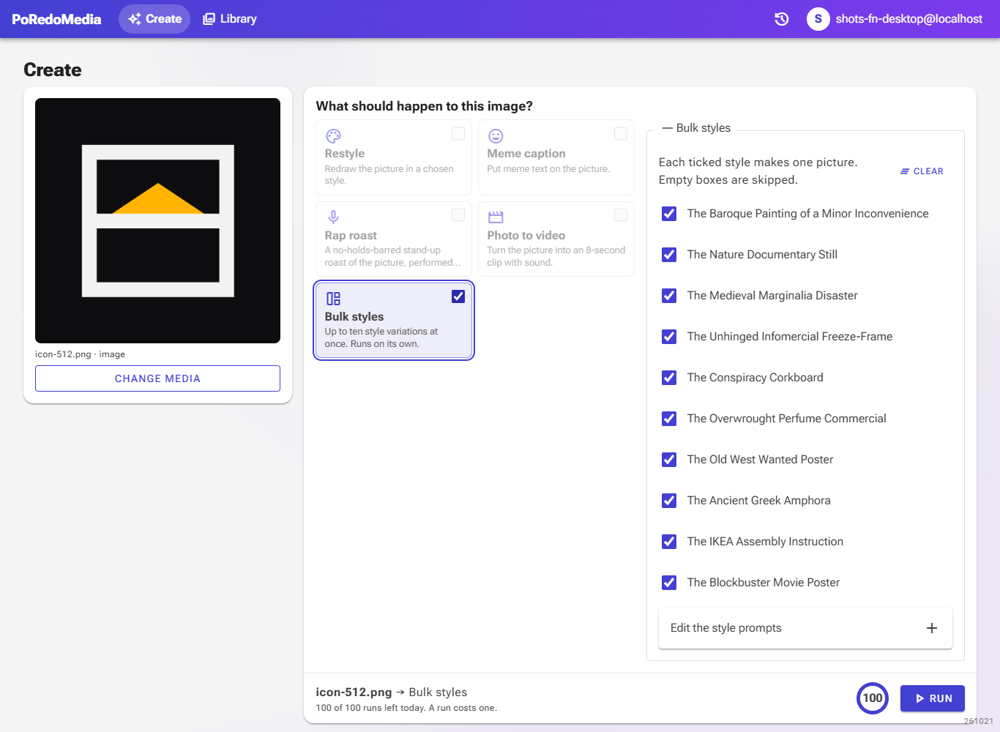
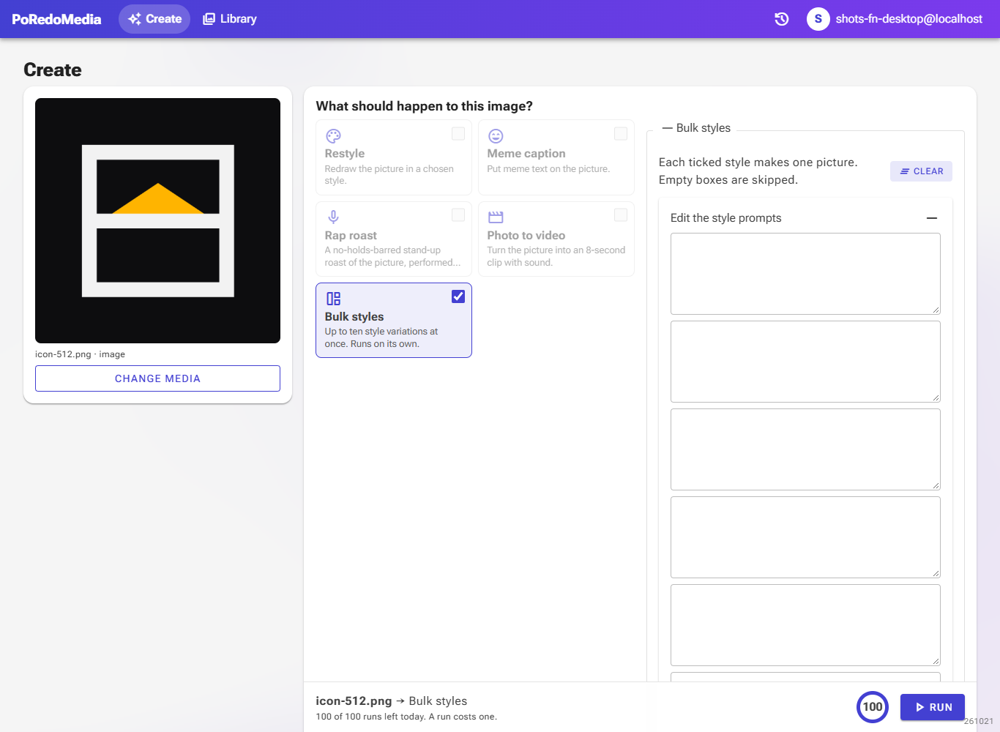

Fewer functions: no Upscale or Cutout, a fixed Rap roast, a Bulk styles Clear
Before and after, captured headless with Playwright at 1366×1000 (desktop) and 390×844 (phone), Development environment, a fresh dev user with one uploaded picture, on 2026-10-21.
FunctionsFive image functions instead of seven
Upscale and Cutout are gone from the picker, the server and the price list, along with the on-device cutout model and the Hugging Face remover.


Rap roastNo options: stand-up, Nuclear, strong language
The style bar, the intensity bar and the strong-language switch are gone. Every roast is a stand-up set at full strength with swearing allowed. If the music model refuses it, the retry still drops the swearing and keeps the jokes.






Bulk stylesClear, and empty boxes are skipped
A Clear button empties all ten style boxes and opens them so you can type your own. A box left empty is no longer listed and is not drawn; the run asks for at least one filled box.


- Removed: Upscale, Cutout (server and on-device), the Rap roast style, intensity and strong-language controls.
- Added: Bulk styles Clear button; empty boxes hidden from the tick list.
- Runs saved before this change that included Upscale or Cutout still open; those names are just left out.